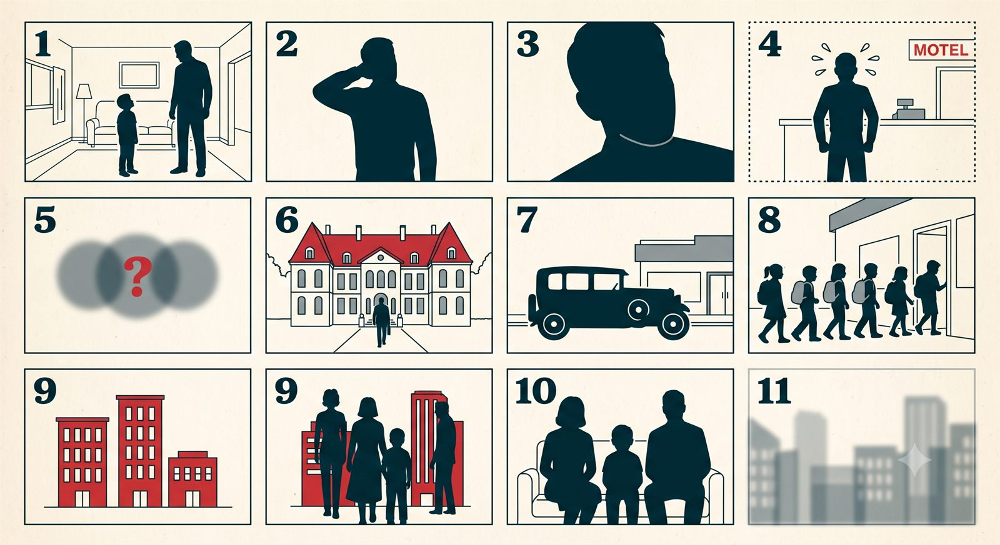

자료조사 메모
- 호텔: 19세기 유럽 상류층의 장기 체류용 숙박에서 출발. 프랑스어 hôtel(귀족 저택)이 어원.
- 모텔: motor + hotel의 합성어. 1920년대 미국에서 자동차 여행객이 차를 세워두고 바로 잘 수 있게 만든 저층 숙박시설.
- 유스호스텔: 1912년 독일 교사 리하르트 시르만이 도보 여행 중인 학생들을 위해 시작. 지금도 청소년·배낭여행객 중심.
- 한국 맥락 메모: 한국에서 '모텔'은 1990년대 이후 자동차 여행보다 단시간·연인용 숙박이라는 이미지가 강하게 붙었다 — 미국 원래 어원과는 다른 방향으로 변형된 사례.
- 오늘날 오해: "모텔=저급, 호텔=고급"은 정확한 구분이 아님. 원래는 누구를 위한 숙소인가의 차이였지 등급 차이가 아니었음.
- 정설은 아니지만: 국내 최초 유스호스텔은 1960년대 도입, 청소년 수련 목적의 정부 지원 시설로 출발.
콘티
그림 콘티 (컷 11장)

전체 대본
[1. 그 질문 — 0:00]
지난주에 저희 집 여덟 살 아이가 갑자기 이렇게 물었습니다.
"아빠, 호텔이랑 모텔이랑 유스호스텔은 뭐가 달라요?"
[2. 얼버무린 순간 — 0:20]
저는 이 질문에 이렇게 답했습니다.
"어... 그게... 음, 가격이 좀 다른 거야."
(살짝 헛기침하고 다른 이야기로 넘어감)
(화면 살짝 빛바랜 톤으로 전환 — 플래시백)
사실 그 순간, 머릿속에는 다른 장면이 스쳐 지나갔습니다. 몇 년 전, 연애하던 시절 모텔 카운터 앞에서 괜히 쭈뼛거리며 카드를 꺼내다 떨어뜨리고, 목소리가 한 톤 올라간 채로 "저... 어... 네..."만 반복했던 그 순간이요.
(다큐멘터리 나레이션 톤으로 진지하게) "이때부터 어른의 사정이라는 게 시작된다."
(바로 셀프 태클) …라고 하기엔 그냥 많이 쭈뼛거렸습니다.
(효과음: 뚜둥 — 화면 다시 현재로)
…그건 나중 얘기고. 아무튼 저는 아이한테 가격 얘기로 얼버무렸고, 지금 생각하면 진짜 이유는 하나도 말 안 한 거였어요.
[3. 왜 다들 헷갈리나 — 0:50]
우리는 이 세 개를 그냥 '자는 곳'으로 뭉뚱그려 씁니다. 그런데 이 셋은 태어난 이유부터가 완전히 다릅니다. 오늘은 이 세 단어가 각각 누구를 위해 만들어졌는지부터 따라가 보겠습니다.
[4. 갈라진 지점 — 1:30]
호텔이라는 단어는 프랑스어 '오텔(hôtel)'에서 왔습니다. 원래는 귀족들의 저택을 부르는 말이었어요. 그 저택에 손님방을 두고 여행하는 귀족을 재워주던 게 지금 호텔의 시작입니다.
모텔은 다릅니다. 1920년대 미국에서 자동차가 갑자기 흔해졌습니다. 그런데 자동차로 먼 길을 가다 보면, 밤에 차를 세우고 바로 옆에서 잘 곳이 필요했어요. 그래서 'motor'와 'hotel'을 합쳐서 '모텔'이라는 새 단어를 만들었습니다. 자동차 여행객을 위한 숙소였던 거죠.
유스호스텔은 1912년, 독일의 한 교사에게서 시작됩니다. 리하르트 시르만이라는 선생님이 학생들을 데리고 도보 여행을 다니다가, 아이들이 싸고 안전하게 묵을 곳이 마땅치 않다는 걸 알게 됐어요. 그래서 학교 건물을 빌려 청소년 전용 숙소를 만들었고, 그게 지금의 유스호스텔이 됐습니다. (참고로 이 교사님은 그 흔한 '대실'과는 1도 상관없는 삶을 사셨습니다.)
[5. 한 문장 정리 — 4:30]
정리하면 이렇습니다.
"호텔은 귀족을 위해, 모텔은 자동차를 위해, 유스호스텔은 아이들을 위해."
[6. 아이 눈높이로 번역 — 5:20]
다음 날, 저는 아이한테 다시 이렇게 말해줬습니다.
"어제 아빠가 대답을 대충 했지? 사실 이 세 개는 원래 다른 사람들을 위해서 생긴 거야. 호텔은 옛날에 귀한 손님이 묵던 큰 집에서 시작했고, 모텔은 자동차 타고 멀리 가는 사람들이 차 바로 옆에서 잘 수 있게 만든 거고, 유스호스텔은 너처럼 여행 가는 어린이들을 위해서 어떤 선생님이 만든 거야."
그러자 아이가 물었습니다. "그럼 저희도 유스호스텔 가면 되겠네요?"
"응, 딱 너 같은 어린이를 위해서 만들어진 곳이야."
[7. 남는 이야기 — 6:40]
이름 하나에도 누구를 위해 만들어졌는지가 숨어 있습니다. 다음 편에서는 아파트, 빌라, 오피스텔이 왜 이렇게 이름이 갈렸는지 따라가 보겠습니다.
배경음악 · 효과음
| 박자 | 추천 |
|---|---|
| 1. 그 질문 | 유튜브 오디오 보관함 — 가벼운 우쿨렐레/피치카토 루프, 낮은 볼륨 |
| 2. 얼버무린 순간 | 같은 곡 유지 + 헛기침 타이밍에 짧은 코믹 효과음 1회 |
| 3. 왜 다들 헷갈리나 | 로파이 피아노 계열로 전환, 잔잔하게 |
| 4. 갈라진 지점 | 3번과 동일 톤 유지, 연도·인물 등장 시 효과음 살짝 |
| 5. 한 문장 정리 | 짧은 스팅어 한 방 |
| 6. 아이 눈높이로 번역 | 배경음 -20dB 이하 또는 완전 제거 |
| 7. 남는 이야기 | 잔잔하게 페이드아웃 |
나레이션 대비 배경음 −20dB 기준, 라우드니스 정규화 −14 LUFS.
썸네일 문구 · 제목 후보
- 호텔 / 모텔 / 유스호스텔, 뭐가 다른 거예요?
- "가격 차이야" — 이거 사실 틀린 답이었습니다
- 귀족을 위해, 자동차를 위해, 아이들을 위해
- 여덟 살한테 "모텔이 뭐예요?" 라는 질문을 받으면
- 호텔·모텔·유스호스텔, 이름부터가 다른 이유
한 문장 정리
"호텔은 귀족을 위해, 모텔은 자동차를 위해, 유스호스텔은 아이들을 위해."